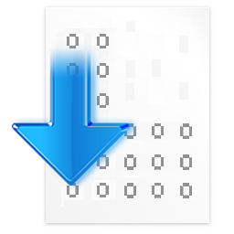
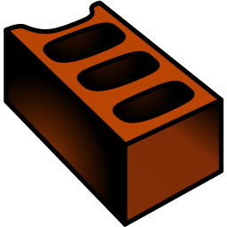

Menu Bar
The menu bar provides access to all features of QtRvSim. It is divided into standard menus: File, Machine, Windows, Options, and Help.
File Menu
Handles operations related to simulation setup, source files, and the application itself.
- New simulation... (Ctrl+N)
Opens the Pre-sets and ELF File configuration dialog to start a new simulation. - Reload simulation (Ctrl+Shift+R)
Reassembles the source code currently in the editor and resets the simulation state (registers, memory, cycle count). - Print (Ctrl+Alt+P)
Prints the contents of the active panel or editor. - New source (Ctrl+F)
Opens a new editor tab to write a fresh assembly program. - Open source (Ctrl+O)
Loads an existing RISC-V assembly source file (.s) into the editor. - Save source (Ctrl+S)
Saves the current editor contents. If previously unsaved, behaves like "Save source as." - Save source as
Prompts for a filename and saves the editor contents to that path. - Close source (Ctrl+W)
Closes the current editor tab (prompts to save unsaved work). - Examples
Opens a submenu of example RISC-V programs bundled with QtRvSim. Selecting one loads it into the editor. - Exit (Ctrl+Q)
Exits the QtRvSim application.
Machine Menu
Controls simulation execution and machine-specific options.
- Run (Ctrl+R)
Starts continuous execution at the configured speed. - Pause (Ctrl+P)
Halts execution if running. - Step (Ctrl+T)
Executes only one instruction. - Speed Controls
Set the execution rate when using Run:- 1 instruction/s (Ctrl+1)
- 2 instructions/s (Ctrl+2)
- 5 instructions/s (Ctrl+5)
- 10 instructions/s (Ctrl+0)
- 25 instructions/s (Ctrl+F5)
- Unlimited (Ctrl+U) – fastest possible speed
- Max (Ctrl+A) – fastest speed, with reduced GUI updates (higher performance)
- Restart
Resets registers, memory, peripherals, and counters to state after the last assembly. - Mnemonics Registers (checkbox)
Toggle register view to show mnemonic names (ra,sp) instead of raw (x1,x2). - Show Symbol
? to be added ? 
Compile Source (Ctrl+E)
Assembles source code in the editor using the built-in assembler.
Build Executable (Ctrl+B)
Builds a standalone ELF file using an external RISC-V toolchain (e.g., GCC/Clang).
Windows Menu
Manages visibility of all simulation panels.
- Registers (Ctrl+D) – Register state viewer.
- Program (Ctrl+P) – Code view with current instruction highlighting.
- Memory (Ctrl+M) – Memory contents.
- Program Cache (Ctrl+Shift+P) – Instruction cache visualization (if enabled).
- Data Cache (Ctrl+Shift+M) – Data cache visualization (if enabled).
- L2 Cache – Second-level cache view (if enabled).
- Branch Predictor – Displays prediction tables and data (if configured).
- Peripherals – Container for simulated I/O devices.
- Terminal – Simulated serial terminal.
- LCD Display – Simulated LCD.
- Control and Status Registers (CSR) (Ctrl+I) – CSR panel.
- Core View – Datapath visualization (CPU core).
- Messages – Log and feedback panel.
- Reset Windows – Restores all panels to their default positions.
Options Menu
- Show Line Numbers (checkbox) – Toggle line numbers in the code editor.
Help Menu
Provides information about QtRvSim, version details, and licensing.
Toolbar
The toolbar provides quick access to frequently used actions:
- New Simulation – Equivalent to File → New simulation... (Ctrl+N).
- Reload – Resets simulator state (equivalent to Machine → Restart).
- Run – Start program execution (Ctrl+R).
- Pause – Pause execution (Ctrl+P).
- Step – Execute one instruction (Ctrl+T).
- Speed Controls – Select execution speed (same as Machine → Speed Controls).
- New Source – Open a new editor tab (Ctrl+F).
- Open Source – Load an existing
.sor.elffile (Ctrl+O). - Save Source – Save current file (Ctrl+S).
- Close Source – Close active code editor tab (Ctrl+W).
- Compile Source – Assemble current RISC-V program with the built-in assembler (Ctrl+E).
- Build Executable – Build ELF with external RISC-V toolchain (Ctrl+B).